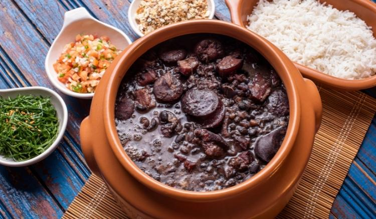

Morda a Borda
Não há limites para uma alimentação saudável.
Início •
Regiões
(Norte •
Nordeste •
Centro-Oeste •
Sul • Sudeste) •
Sobre Nós •
Referências
Região Sudeste
A culinária da região formada pelos
estados de São Paulo, Rio de Janeiro, Minas Gerais
e Espírito Santo recebeu
diversas influências ao longo do tempo, tais
como de
indígenas, portugueses, africanos, bandeirantes e imigrantes de várias partes do mundo.
Com o passar dos anos,
a gastronomia local foi se modernizando, mas a culinária
ainda mantém as suas tradições,
com inúmeras comidas típicas sendo bastante consumidas e apreciadas.
A culinária recebeu influências
de diversos povos e as referências trazidas por essas culturas
refletiram diretamente nas comidas típicas, muitas delas amplamente consumidas até hoje e em
todas as partes do Brasil.
A culinária da Região Sudeste
é bastante rica. Tanto as culturas de doces
como comidas
salgadas são bastante variadas e apreciadas no país inteiro.
O Rio de Janeiro, por exemplo,
tem como prato marcante a feijoada. O prato é um símbolo nacional,
mas
é bastante consumido no estado, o que o leva a ter uma forma própria
de desenvolvê-la. A
receita carioca inclui carnes salgadas (como carne-de-sol),
folhas de louro, várias partes de
porco, cebola e uma laranja (para ajudar a deixar a feijoada menos salgada).
Compondo propriedades importantes
como, alta concentração de proteína, concentração de zinco,
propriedades antioxidantes, entre outros. Mas também a quantidade de sódio,
conservantes, açúcar e gordura saturada que podem estar presentes podem
trazer malefícios para a saúde.
Receita de Feijoada
Ingredientes
Para a Dessalga das Carnes
1,1 kg de costela de porco salgada (1 peça com 12 ripas)
800 g de carne-seca
600 g de lombo de porco salgado
Modo de Preparo
Comece o preparo da feijoada no dia anterior
para dessalgar as carnes. Descarte o excesso
de gordura das peças. Corte o lombo e a carne-seca
em cubos médios
de cerca de 3 cm. Apoie a peça
de costelinha na tábua
e corte a carne entre os
ossinhos para separar as ripas.
Coloque cada tipo de carne
numa tigela grande,
cubra com bastante água
e leve à geladeira.
Deixe de molho por 24 horas para dessalgar,
trocando a água a cada 3 horas, de preferência.
Para a Feijoada
Ingredientes
1 kg de feijão-preto
500 g de paio (4 unidades)
3 cebolas
5 dentes de alho
¼ de xícara (chá) de azeite
3 folhas de louro
1 colher (chá) de cominho em pó
Modo de Preparo
Coloque o feijão numa peneira e lave bem sob água corrente.
Transfira os grãos para uma tigela grande
e cubra com
2,5 litros de água – se algum boiar, descarte. Cubra com
um prato e deixe de molho
por 30 minutos – se o feijão
ficar muito tempo de molho pode perder a cor
e desmanchar
durante o longo cozimento da feijoada. Enquanto isso,
faça o pré-cozimento das carnes.
Escorra a água das carnes
dessalgadas e transfira para
um caldeirão grande (ou panela)
com capacidade para 11
litros. Cubra as carnes com água e leve ao fogo alto –
cerca de 4 litros bastam,
a quantidade pode variar de
acordo com o tamanho da panela, o importante
é que as
carnes devem ficar completamente imersas. Deixe
cozinhar por
10 minutos em fogo alto, contados após
a fervura
– o pré-cozimento elimina o excesso de
gordura e sal das carnes.
Enquanto isso, descasque e
pique fino as cebolas e
os dentes de alho.
Com uma faca pequena, retire a
pele dos paios. Escorra a água do feijão.
Passados os 10 minutos,
com uma escumadeira,
transfira as carnes pré-cozidas
para uma tigela
grande e descarte a água do cozimento, com cuidado
para não se queimar.
Volte o caldeirão ao fogo alto. Quando aquecer,
regue com o azeite,
adicione a cebola e tempere
com uma pitada de sal. Refogue
por cerca de 8 minutos
até começar a dourar. Junte o alho,
o cominho, as
folhas de louro e mexa por 1 minuto para perfumar.
Acrescente o feijão
demolhado ao refogado e misture
bem. Adicione 6 litros de água
e mantenha a panela em
fogo alto. Assim que começar a ferver, junte a
carne-seca
e a costelinha pré-cozidas, abaixe o fogo
e deixe cozinhar por 2 horas, mexendo de vez em quando.
Após as primeiras 2 horas de cozimento,
junte o lombo
pré-cozido
e os paios inteiros. Deixe cozinhar em fogo
baixo por mais
3 horas, mexendo de vez em quando
delicadamente para não desmanchar os grãos de feijão.
Faltando 30 minutos para o
fim do cozimento, com uma
pinça, transfira os paios
para a tábua e corte cada
um em fatias de 1 cm, na diagonal. Volte as fatias
para a panela e deixe cozinhar até completar as 5
horas
de cozimento total, ou até que as carnes
estejam bem macias e o caldo da feijoada
comece a
engrossar. Sirva com arroz, couve refogada, gomos
de laranja e farinha de mandioca torrada.

Atenção ao planejamento:
A feijoada fica ainda mais saborosa no dia seguinte
do cozimento. Planeje 3 dias para o preparo da feijoada:
Dia 1 - Faça a dessalga das carnes.
Dia 2 - Cozinhe o feijão e as carnes.
Armazene a
panela na geladeira (se preferir, divida a
feijoada em panelas menores para armazenar).
Dia 3 - Sirva a feijoada com os acompanhamentos:
retire a feijoada da geladeira e leve ao fogo
médio até começar a ferver, abaixe o fogo
e deixe
aquecer por 20 minutos, mexendo de vez em quando
delicadamente para evitar que o feijão grude no
fundo da panela.
© Airton Mesquita, Técnico em Nutrição e Dietética, 2023; IV FCAC
(Feira de Ciências, Arte e Cultura); EEEP Leonel de Moura Brizola.